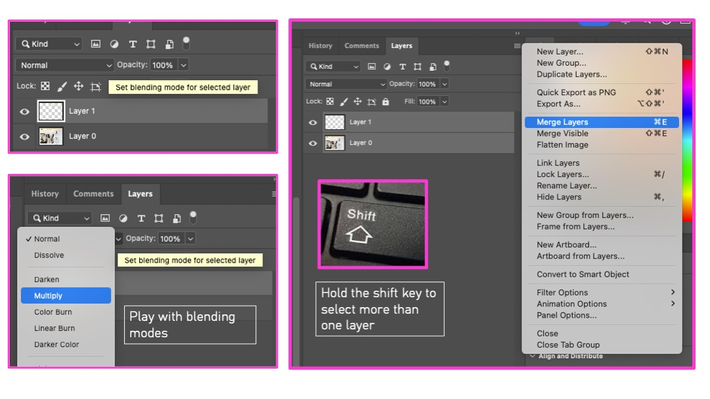

Photoshop Exercise — Content‑Aware Fill & Artist Reflection

Example outcome demonstrating use of Content‑Aware Fill and contextual artist research text.
Purpose: Combine Photoshop practical skills with artist research and reflection. Use Content‑Aware Fill to create experimental imagery from your project work, then add contextual notes with the Type Tool (T).
Recommended format: A3 landscape (420 × 297 mm) | 300 dpi | CMYK
Step 1 — Prepare Document
- File → New → A3 Landscape
- Resolution 300 dpi | Colour Mode CMYK

Step 2 — Arrange Your Work
- Import images of design experiments.
- Use Move Tool (V) and Cmd/Ctrl + T to position or scale.
- Add a white background layer (Edit → Fill → White).

Step 3 — Content‑Aware Fill
- Select an area using the Rectangular Marquee (M).
- Edit → Content‑Aware Fill… → adjust preview → OK.
Step 4 — Refine and Blend
- Merge layers and experiment with blending modes and opacity.

Step 5 — Add Text & Artist Research
- Use Type Tool (T) to write artist names, short quotes, and reflective notes.
- Keep sentences short and clear — focus on meaning, not long text blocks.
Step 6 — Finalise A3 Page
- Ask yourself: Do my images connect and tell a story?
- Does my layout help to show and enhance this story?
- When finished, go to File → Save As → Photoshop (.PSD) — this keeps layers editable.
- Then export as JPEG (.JPG) → ready for upload to Padlet or online review.

Artist Research & Reflection
Now choose your own artist — someone who connects to your idea or visual interest. The list below shows different approaches you can look at for inspiration, but you should find the one that best supports your story.
- Gerhard Richter – Uses blurring to question memory and photography.
- Lorna Simpson – Combines image and text to explore identity and language.
- Andreas Gursky – Builds digital compositions from multiple images.
- Ruth van Beek – Creates cut‑outs that suggest movement and emotion.
- Sarah Charlesworth – Investigates how images communicate concepts.
Reflection prompts — add text directly on your A3 page:
- Which artist did you choose, and why does their work connect to your images?
- Include a short quote or idea from the artist that links with your theme (for example: memory, identity, place).
- Write one or two sentences explaining what you learned from this artist — visually or conceptually.
- Add a short reference (artist name + book, website, or museum source).
Step 7 — Quick Quiz: Photoshop Essentials
1. Which Photoshop tool automatically fills a selected area by analysing surrounding pixels?
2. What shortcut key activates the Type Tool?
3. What file format should be used for saving editable Photoshop files?
4. For print-quality layout, which resolution should you choose?